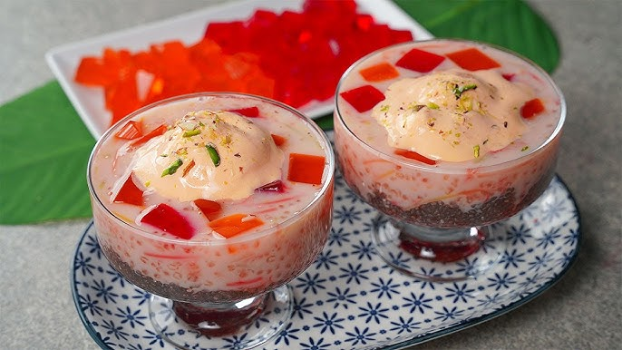

Faluda
Faluda is a layered dessert drink combining rose syrup, milk, vermicelli and ice cream.
It is refreshing, visually appealing, and perfect as a sweet treat.

20 mins
Easy
Ingredients
- Milk
- Rose syrup
- Vermicelli
- Sabja seeds
- Ice cream
Steps
- Soak sabja seeds
- Boil vermicelli
- Mix syrup with milk
- Layer ingredients
- Serve chilled